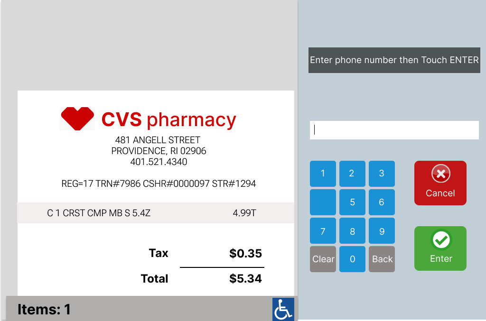
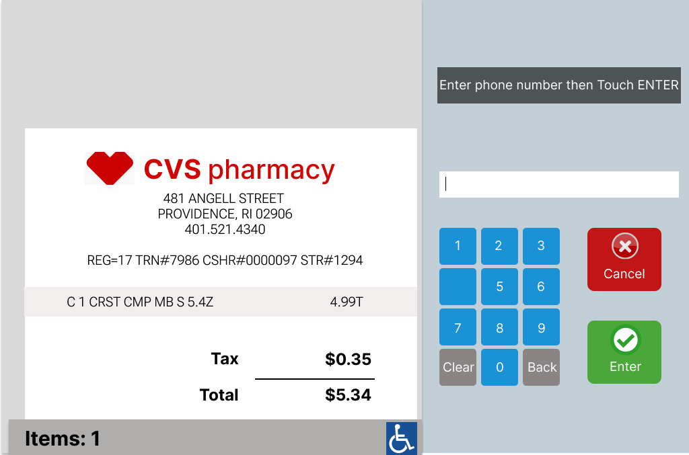

Project 1: Personas and Storyboarding - Understanding CVS
Personas and Storyboarding is a project that I've completed for the UIUX course I've taken at Brown University in 2022. It includes observing users who use a particular public interface, accessible to everyone and understanding their usage, the interface, and their interactions.
This project describes the interface used in CVS self-check-out kiosks in Wayland Square, Providence, and the user experiences with it, which helps with understanding the lacking points in the interface and how to understand them.
Self-service kiosks are present in every CVS store and can be used for fast, practical checkouts. It has a main screen where customers can see the items that they scanned, the prices, and payment information. It also has a payment screen where users can scan their credit cards. In addition, the interface is completed by the item scanning area and the bagging area.
Prototype of the Interface
 


Key Observations
- It is very hard to know when to scan the coupons or how to get cashback using the kiosks.
- Payment process is very cumbersome and takes time due to many steps and buttons for every user that was observed.
- The majority of the users had difficulty in finding the barcodes of the products and tried multiple times.
- If there is an error or if the purchase needs to be verified, a CVS employee needs to come, making it harder and slower.
Interviews were conducted...
Why did you choose to use the check-out kiosks at CVS instead of the in-person check-out?
The kiosks are mainly used when there is a line in the in-person check-out and are seen as faster options and ideal for especially quick purchases. Some people simply don't want to interact with other people, that's why they stated that they'd want to use the check-out kiosks at CVS.
What was your first impression when you were looking at this interface?
The interface looked very old but some people found it easy to begin using as they were already familiar with it. On the other hand, some people found it hard to begin as they got confused about whether to start scanning an item right away or if they need to select an option. This was especially harder to do for interviewees who didn't have too much experience with these CVS check-out kiosks.
Can you please walk me through how your experience was, using this interface?
There were a lot of buttons for some users. For others, the lag in the machine was very confusing and frustrating along with the ambiguity in when to scan the coupons. Some interviewees also stated that it is hard to make the payment as it asks a lot of questions before it accepts the payment from the customer. The users also expressed their frustrations about the pricing errors, as some prices were outdated and this led them to call employees multiple times.
When you were using this user interface, was there anything unpredictable or something you would like to improve?
Bagging the items and keeping them on the right-hand side seemed very confusing to some users. Some of the machines didn't accept their payment if the items were moved outside of the bagging area, causing confusion. Additionally, if there is an error or if an item needs to be verified, the CVS employee needs to come, making it very difficult and taking too much time to proceed. Nealy all the interviewees stated that this made it hard and very time-consuming if the CVS employees are busy.
When using this interface what was the easiest thing to do and hardest thing to do during check-out?
Generally, the users expressed that it was very hard to find the barcodes of the products, apply the coupons, get cashback, or make a payment. They stated that because there are too many options and buttons, it takes some time to be able to successfully finish these processes. On other hand, some users found it easy to get started with using the kiosks and see how much each time costs. Yet, they expressed their frustration with the not very intuitive interface, and the need to call someone if they have any questions, want to delete a product or start over.
Understanding one of the users
Meet Alissa to understand some of the common problems with the interface
What I learned / Challenges
This project gave me a chance to explore one of the interfaces that is publicly available and a lot of people from a wide range of background uses. With the interviews that I conducted and the observations I made, I had the chance to understand some of the common usability issues with this interface at CVS. This helped me understand how to design in a way that a lot of users from all age groups and backgrounds will be able to use in the most user friendly, effective, and efficient way possible.